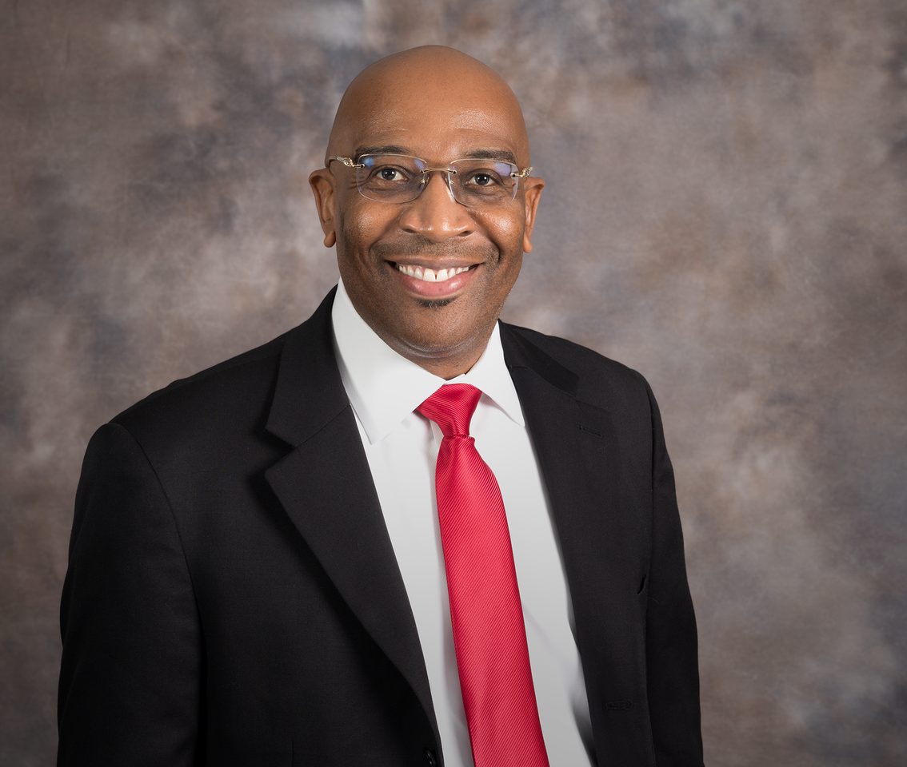
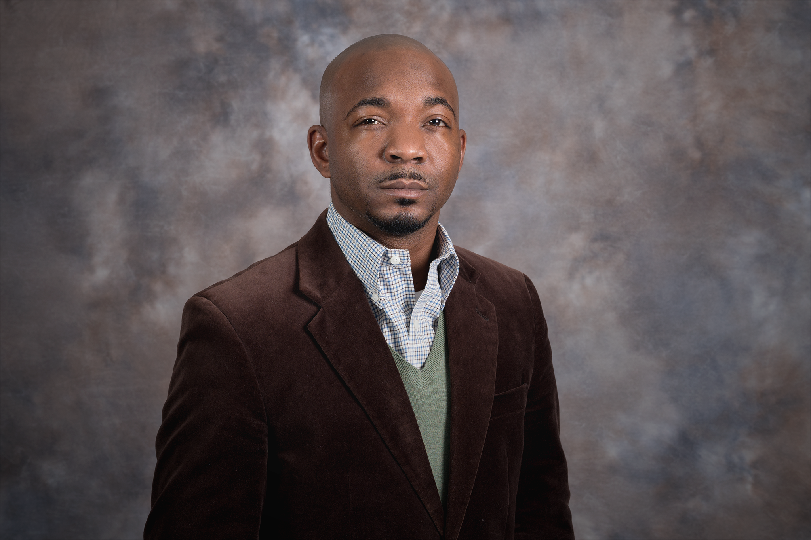

Meet Our LEADERSHIP TEAM
-

Fernando Lassiter
Founder
Began his career at Lincoln Heritage in 2014 and has since grown...
Shenna Michelle
Managing General Agent
Shenna Michelle has been one of The Top Producers of The Capital Group since 2016. With her track record, she became a Regional Sales Director less than 9 months into the business. Ms. Michelle has also earned her way to be the 1st female as well as youngest Managing Agent in the Capital Group. She has become one the fast recruiting managers in Mississippi.
Shenna Michelle is a single parent of 3 children. She is one of the most influential women in her agency. Because of her hard work, dedication, and great work ethic, she has become the Founder of The Empowerment Group. Because of her story, she has encouraged and inspired women young and old to trust the process, and to never give up. She believes you are what you say you are. She says, "Attract what you expect, reflect what you desire, become what you respect, and mirror what you admire."

Donaldo Harris
Managing General Agent
Donaldo M. Harris, Sr. is a husband and a father of five beautiful children. Donaldo was born and raised in Virginia. He is the youngest of eight children. Donaldo graduated with his Bachelor of Science in Mathematics and has a Master of Science in Educational Leadership. Donaldo has spent the last twelve years working in the field of education as a School Administrator. Donaldo has always had a strong connection to people and a love for sales, but needed to find a way to be able to bring the two things he loves together. He knew that working for someone else wasn't the only option and that there had to be a better way to reach his goals. In June of 2017, Donaldo took a leap of faith and walked away from his career in education to pursue his passion for helping people. Donaldo went on to join The Capital Group, which is a part of Lincoln Heritage Life Insurance. He then became the founder of D.R.I.V.E.N (Developing Relationships, Influencing Visionaries, Empowering Neighborhoods) Insurance Group. The mission of D.R.I.V.E.N Insurance Group is to help individuals that are truly seeking change in their lives. D.R.I.V.E.N is changing the faces of many individuals and neighborhoods. Dreams Will Become Reality.
Donaldo M. Harris Sr.
Mike Hayes
Managing General Agent
Michael Hayes joined Lincoln Heritage Life Insurance Company in July 2012, as an Independent Sales Agent. In September 2013, he was promoted into the role of Managing Agent (MGA). Michael’s core tasks include sales, leadership, and team development. He has been with the company six years. During his tenure, his positions include Corporate Sales Director, Executive Board Director, and MGA. He is the Founder and leader of The Elite Team and its motto is “Every Leader Excels in Time.” Previously, Michael used his entrepreneurial talents to run several businesses successfully for over 25 years. However, his biggest accomplishment is being a proud husband and father of four (3 daughters and 1 son). He enjoys reading, serving his community, meeting new people, networking, team building, and traveling.
His favorite author is John C. Maxwell and favorite business motto is “Reach one, teach one.”– Unknown


Ervin Davis
Managing General Agent
My name is Ervin Davis and I come from various backgrounds including the U.S. Army and marketing for the great celebrities in Alabama! I never knew you could control your income and set your own destination! I've always worked for someone else, it was safe! But, when I found out about residual income and creating my OWN fortune, I got hooked. That is what Lincoln Heritage and The Capital Group has done for me. It has given me control! Do you want control? If so, this is the best place to do it! Hands down! No one will ever tell me again how much I am worth! Unlimited income potential! Great training! Outstanding office support! And, last but not least, you CONTROL your own Destiny! Never working for anyone else!
"No Mercy!"
Robin Richardson
Manager
Began his career...

Charnetta Barnes
Manager
Hello, my name is Charnetta Barnes and I have been with Lincoln Heritage for about 15 months. Quick story about my background, I grew up in the streets in the New York area and I did not have a good life. At the age of 15 I was put in a coma and I suffered a few brain injuries. Unfortunately, due to my injuries I had to learn how to speak and relearn daily habits that were not familiar to me anymore. I'm not going to bore you with my life story but as of now I moved to Alabama for a more promising future. I am a mother of 5 Beautiful young boys and I can honestly say Agent Success Management has changed my life. I also get emotional when I say this but last year for Christmas I wasn't in a greats financial situation and I was unable to buy the thing my children needed, never mind what they wanted. I was pursuing a law degree and working pay check to Tuesday. I was only financially capable to pay bills and school fees. One day after class I heard a knock on my door, and it just happened to be a Lincoln Heritage Agent. Long story short, the lovely woman asked me to attend her company’s meeting after I explained to her I could not afford any coverage for my family. I was hesitant on going but God told me, if you never go you will always wonder what would have been in store for you. Ladies and Gentlemen that day changed my life! The meeting was my destiny. I trained for about a week. My first week alone I made over $3,000. God, I was so excited and I kept checking my bank account as if I was seeing things. I would go to the bank and take all the money out just to go home and hide it. LoL! Fast forward a few months, I kept up with my consistency as far as learning the business and dealing with our wonderful clients, but there was still something missing. I wasn't plugged into the system fully, I wasn't taken this opportunity for all it's worth. Then one day it hit me, For Things to Change You Must Change. The best part of this opportunity for me is personal development. I would like to thank my mentors Coach Sean Simmons and Fernando Lassiter for always pouring knowledge and wisdom into our Team. I'm EXCITED to see what the future holds for me. I'm a completely different person. I think, eat, and talk different. This opportunity has truly changed my life and as well as others surrounding me. My goal is to become a millionaire with Agent Success Management. As children, we forget to Dream and we lose our imagination. I Believe in our product, I Believe in our company, and most importantly I Believe in Me.
Thank You All
Joshua Napier
Manager
Hello, my name is Joshua Napier and I have been with Lincoln Heritage Life Insurance Company for 13 months. I am the proud father of 5 amazing little boys. I worked as a restaurant supervisor for years. I've managed 3 eateries and worked in industrial warehouses living paycheck to paycheck. I was injured severely at Glass Manufacturing Company, Coral Industries. I was physically handicapped for years and nearly forced to have my arm amputated. But by the Grace of God, the support I had from my wife, Charnetta Barnes, and my family is the reason I was able to recover successfully. Through the time I've been with Agent Success Management, my life has done a complete 360-degree turn. The personal development has not only changed things for me, but it has changed the things around me and the way I look at them. I am so blessed to have the opportunity to take control of my life, my income, and have the chance to change the lives of the people around me. My goal is to become a Millionaire with ASM and enjoy life as a Business Owner. The Sky is the Limit. I'll See You At The Top.
Keith Adams
Manager
Greetings everyone, If you are reading this that means you made a decision, which you can position yourself in the right place at the right time. Decisions are a BIG part of our lives. We can make good ones, bad ones, or just don’t make any at all. Just like taking a test the teacher will always say don’t leave any answer blank, take a guess at it, you just may get it right. I grew up in Pompano Beach, FL being the youngest of 1 brother and 2 sisters with both my Dad and Mom. One of the best decisions I made was in October 1992 when I enlisted in the UNITED STATES MARINE CORPS. Semper Fidelis Always Faithful. No matter what I do even when I fall short I try to remain faithful. The Marine Corps taught and instilled discipline, courage, and motivation just to name a few. I served as a police officer for 10 years in North Carolina before going to Iraq in 2008 to train Iraqi Police Officers. My Law enforcement career ended in June 2011 from injuries that occurred in Iraq. My Friend, Brother, Coach, and Regional Director extended an invitation to come to Alabama to take a look at this opportunity and I grabbed ahold of it. I had another opportunity to make a difference while making a living. I have to thank my Brothers’ Keepers, Fernando Lassiter and Donaldo Harris for truly being there because this is truly a T.E.A.M. I moved to Alabama and I had no plans B or C, this had to work! My 3rd month in the business I was Top Producer in the State of Alabama and this mountain keeps getting higher and higher! I read in a good book to much is given, much is required. Much is required to be self-employed. Much is required to be the boss. Much is required to have your heart’s desires. In closing, my signature and quote is RISKING FAILURE TO ACHIEVE SUCCESS! You have to and will risk losing something to Achieve Success. I hope to see you at the Top!
Shark Shark!